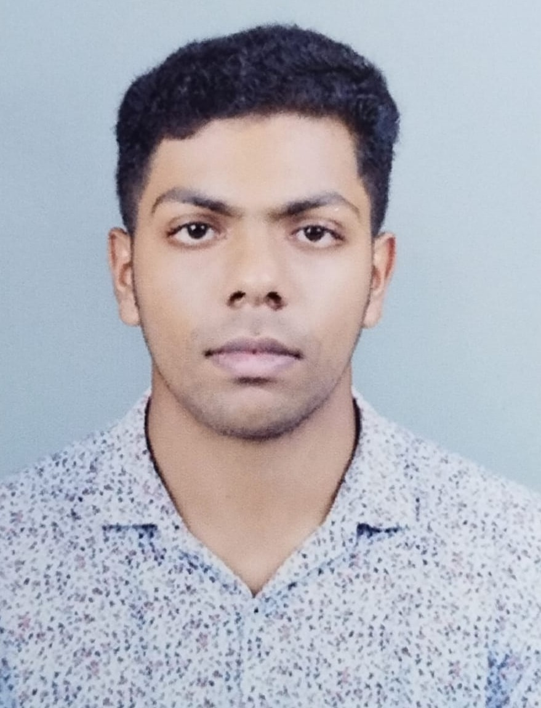

Designer | Probelm Solver | Web Developer

Hello,My name is Govind, and I am a passionate and driven individual with a strong interest in technology, creativity, and design. With a background in computer science and hands-on experience in developing academic projects such as concert ticket management systems, parking schedulers, port management systems, and sports score applications, I continuously strive to enhance my technical and problem-solving skills.Beyond academics, I have a deep enthusiasm for sports including volleyball, football, and cricket, as well as an interest in movies and digital games. These interests strengthen my creativity, teamwork, and strategic thinking abilities.Aspiring to become a graphic and UI/UX designer, I aim to combine technical knowledge with innovative thinking to create meaningful, user-friendly digital experiences. I am committed to continuous learning and growth, with the goal of building impactful and visually engaging solutions